This is the 2017 schedule for the Georgia Bulldogs as well as their current standing from todays date. Impact players of the year so far:
The Georgia Bulldogs started off their season with a tough matchup against Notre Dame, who are now ranked number 3 in the playoff rankings. Due to Jake Fromm's throwing ability, and behind Chubb and Michel's running ability, UGA was able to pull off the win. Due to our strong defense, and our offensive ability to move the ball down the field consistently, UGA has secured the number 1 spot in the playoff rankings, landing us a position in the SEC championship December 2nd (opponent currently unknown). It's likely we will play Alabama in the SEC championship, making for the toughest opponent we'll have played all season, and likely shaping up to be a preview of the National Championship. It's unlikely that the teams in the SEC championship game will also end up playing each other again in the championship, but it's not impossible. What I think is more likely to happen is the loser of the SEC championship playing in the Rose Bowl or some other prestigous bowl game. Although nothing can be said for certain as of now, one thing is undeniably true: the Georgia Bulldogs have a real chance to win the National Championship this year!
| Date | Match-up | Score | Winner |
| September 9, 2017 | 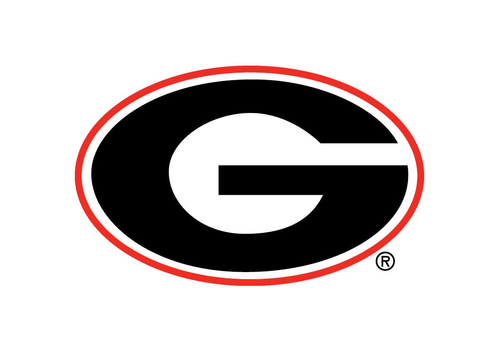 UGA vs. Notre Dame 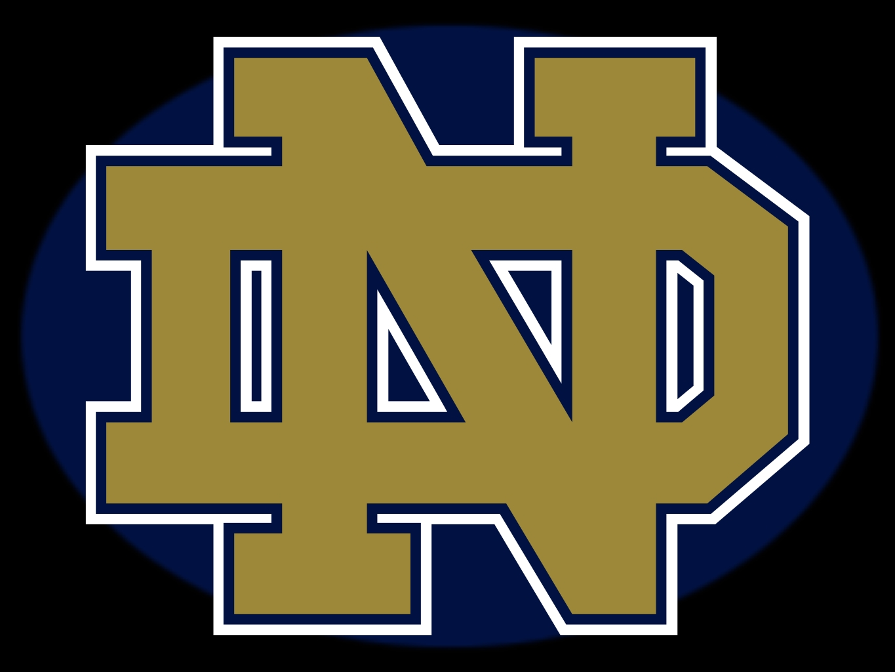 | 20-19 | UGA |
| September 16, 2017 | 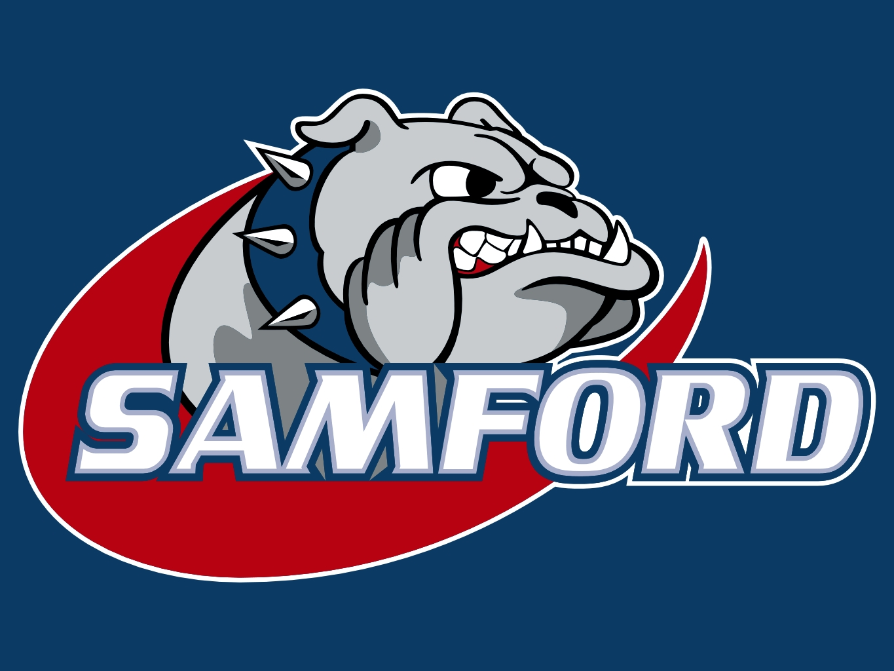 Samford vs. UGA | 14-42 | UGA |
| September 23, 2017 | 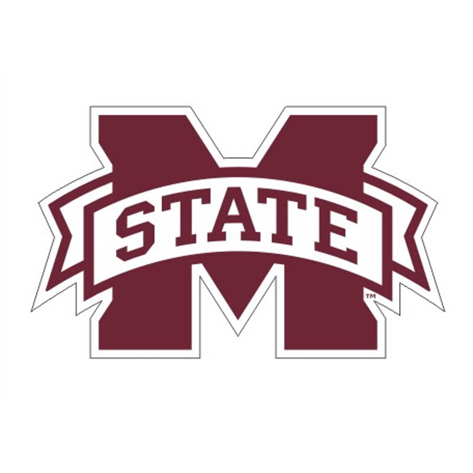 Mississippi State vs. UGA | 3-31 | UGA |
| September 30, 2017 | UGA vs. Tennessee 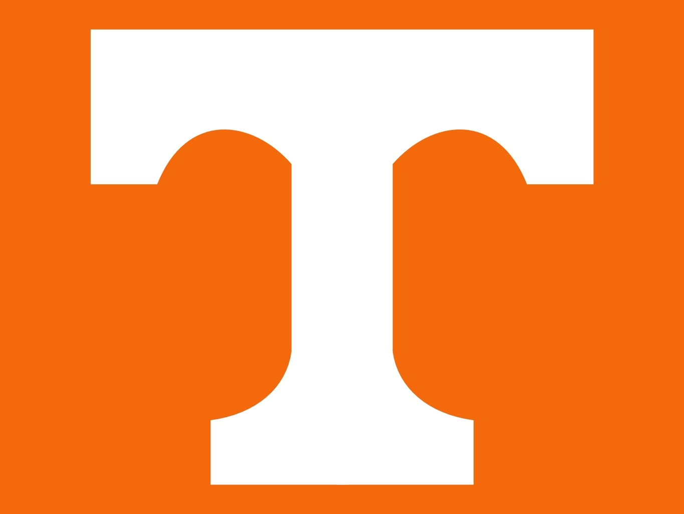 | 41-0 | UGA |
| October 7, 2017 | UGA vs. Vanderbilt 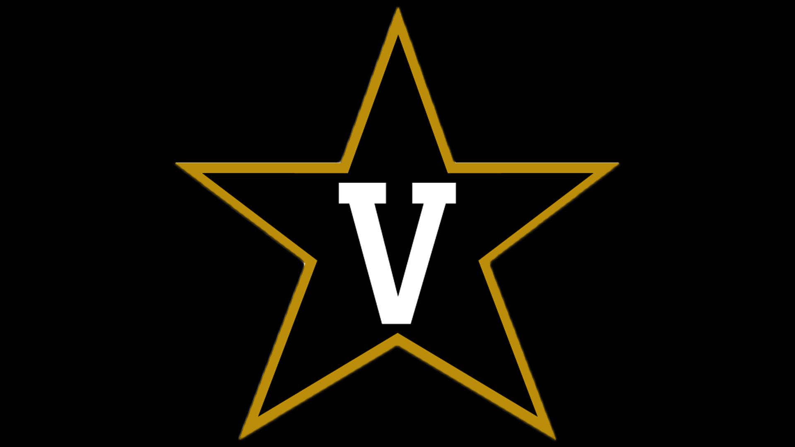 | 45-14 | UGA |
| October 14, 2017 | 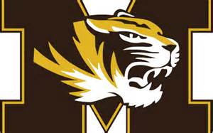 Missouri vs. UGA | 28-53 | UGA |
| October 28, 2017 | UGA vs. Florida 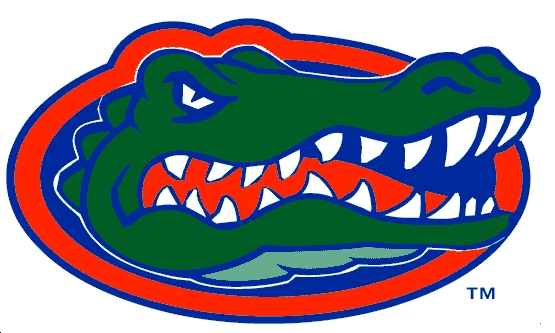 | 42-7 | UGA |
| November 4, 2017 | 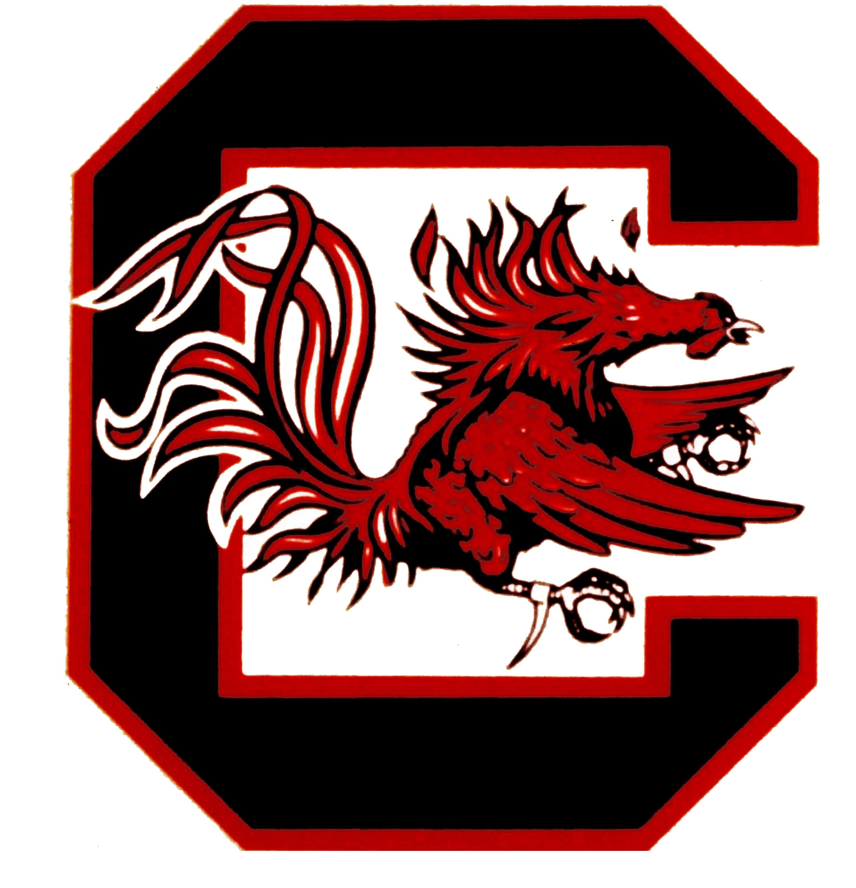 South Carolina vs. UGA | 10-27 | UGA |
| November 11, 2017 | UGA vs. Auburn 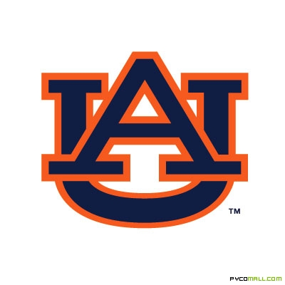 | 17-40 | Auburn |
| November 18, 2017 | 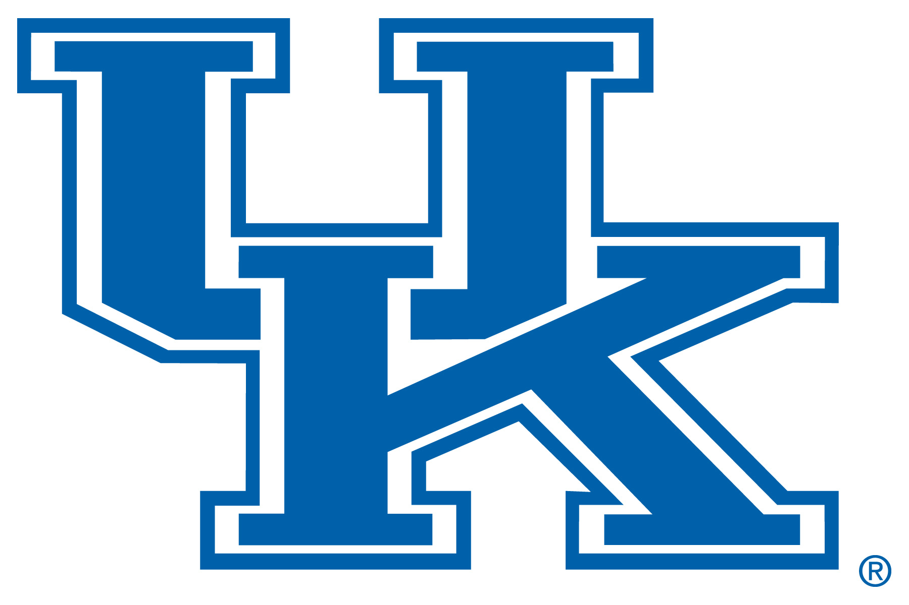 Kentucky vs. UGA | TBD | TBD |
| November 25, 2017 | UGA vs. Georgia Tech 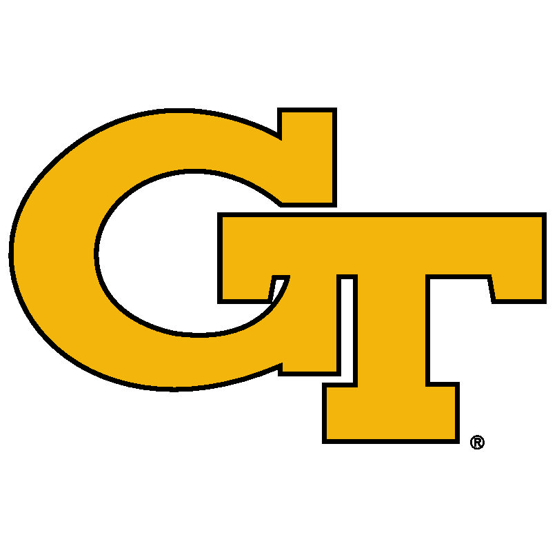 | TBD | TBD |
Posted by: Nicholas Leonard ©
Contact information:nal38141@uga.edu